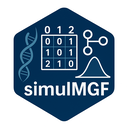

 Package to simulate a random SNP Matrix for diploid organisms (coded by 0, 1, 2) or half sib/full sib SNP matrix from real or simulated parents SNP data. Simulate phenotypic traits for real or simulated SNP data, controlled by a specific number of QTLs and their effects, sampled from a Normal or a Uniform distributions.